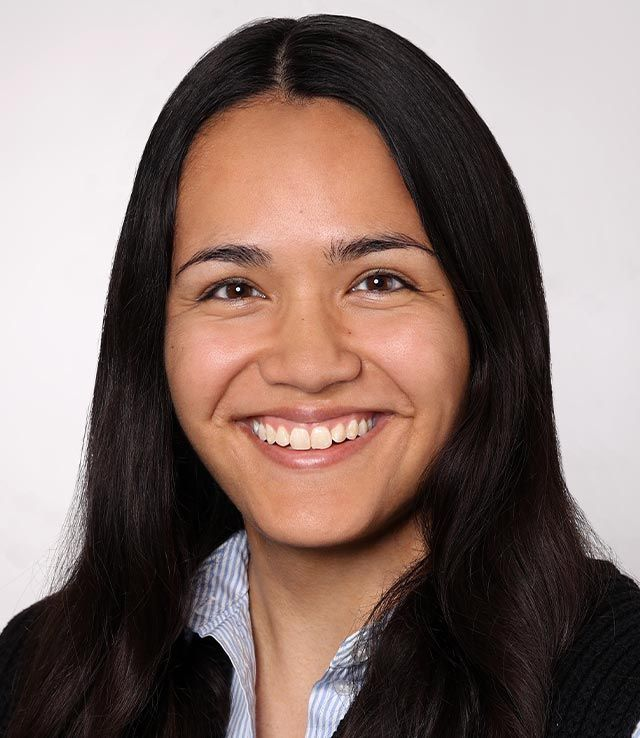
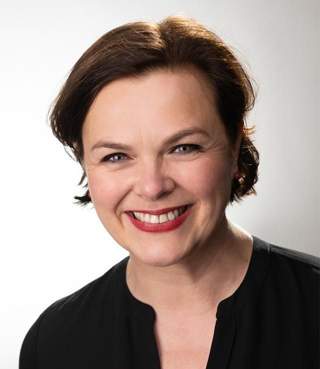
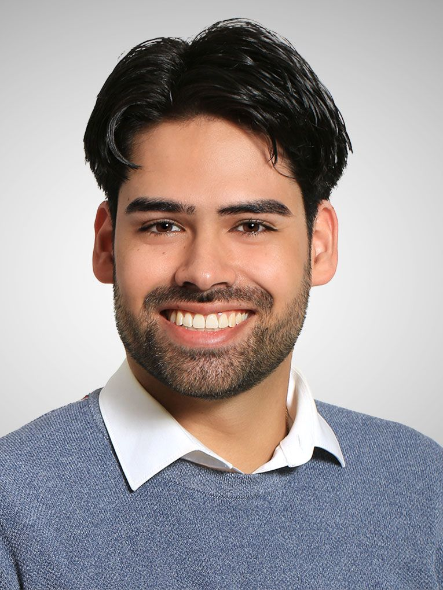
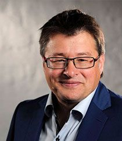

Unsere KSK-Experten, Berater und Ihre Mitgliederbetreuung
KSK-Beratung buchen
Als registrierter Versicherungsmakler ist Detlef Husemann bereits seit Januar 1986 tätig. Etwa ab Ende der 90er Jahre mehrten sich Anfragen zu den Regelungen bezüglich der Künstlersozialkasse für Journalisten, Künstler und Publizisten. Durch die Agenda 2010 nahm die Zahl der selbständigen Künstler, Journalisten und anderer Medienschaffender stark zu. Dadurch stieg auch die Anzahl der sehr spezifischen Fragen weiter rasant an. Den stetig wachsenden Beratungsbedarf zur KSK konnte der Versicherungsmakler Detlef Husemann bald nicht mehr allein bedienen. Ab 2005 vorbereitet – erfolgte die Gründung des Vereins Freie Wildbahn e.V. schließlich im März 2007.

Marlon Rother ist seit 2016 zugelassener Rechtsanwalt und Mitglied der Rechtsanwaltskammer Hamm. Seine Tätigkeitsschwerpunkte sind das allgemeine Zivilrecht, Forderungsmanagement, Vertragsgestaltung und IT-Recht.
Durch eine ausgezeichnete bundesweite Vernetzung und enge Zusammenarbeit mit anderen Rechtsanwaltskanzleien kann RA Rother zudem eine fachgerechte Beratung in den Tätigkeitsfeldern des Straf-, Verkehrs- und Arbeitsrechts gewährleisten. Zudem ist er seit 2017 als ehrenamtliches Vorstandsmitglied und Justitiar des Roten Kreuzes O.V. Neheim-Hüsten tätig.
Seit 2019 verstärkt er das Team des Freie Wildbahn e. V. als rechtlicher Berater und ist für Mitglieder der Ansprechpartner für Forderungsmanagement sowie erforderliche Inkassoverfahren.

Während meiner Ausbildung als Kauffrau im Gesundheitswesen begegnete mir das Thema Künstlersozialkasse eher selten. Das deutsche Sozialversicherungssystem war aber Bestandteil meiner Ausbildung. Auch wenn es im Künstlersozialversicherungsgesetz um sehr spezielle Voraussetzungen geht, erschließen sich mir die Zusammenhänge dann doch sehr schnell und sinnvoll. Im Austausch mit meinem Vater ist mir zusätzlich deutlich bewusst geworden, dass es wie in vielen anderen Bereichen auch in diesem Fall entscheidende Unterschiede zwischen der Theorie und der Praxis gibt. Die Praxiserfahrung ist nämlich neben der fachlichen Expertise, ein wesentlicher Bestandteil unserer Arbeit hier bei Freie Wildbahn e.V.
Der Verein verwaltet, betreut und berät zu individuellen Themen und Fallkonstellationen sehr transparent und vertrauenswürdig. Es geht darum die Ausgangslage für Künstler und Medienschaffende ausgiebig zu erörtern, damit unsere Mitglieder optimal aufgestellt sind.
Insofern fiel mir die Entscheidung, mich nach Abschluss meiner Ausbildung, der Arbeit hier bei Freie Wildbahn e.V. anzuschließen sehr leicht. Neben dem positiven Teamspirit habe ich täglich Gespräche mit unseren Mitgliedern, die unsere Unterstützung gerne dankend annehmen – darüber bin ich sehr glücklich.

Anfang 2015 kam ich, nach meiner Umschulung zur Kauffrau für Büromanagement bei einer Werbegemeinschaft und nach fast 20-jähriger Erfahrung als Fachkraft aus dem Einzelhandel zu Freie Wildbahn und war sofort von allen täglichen Aufgaben und den angebotenen Leistungen für die Künstler und Publizisten begeistert.
Im Laufe meiner Arbeit habe ich dann schnell erkannt, welche verantwortungsvolle Aufgabe hier geleistet wird, um den freien Künstler die Möglichkeit zu verwirklichen, frei in Ihrer Kunst und dabei, individuell sozial abgesichert zu sein.
In der Mitgliederbetreuung arbeiten wir mit unseren Experten Hand in Hand, damit jede Fragestellung so schnell und kompetent wie möglich im Interesse der Mitglieder bearbeitet werden kann. Das derart positive Feedback unserer Mitglieder, zeigt mir täglich, welchen Wert die Leistung des ganzen Teams darstellt.
Neben meiner Arbeit beim Steuerberater habe ich als Fachkraft für Büromanagement bei Freie Wildbahn e.V. zunächst ausgeholfen. Bereits nach kurzer Zeit habe ich festgestellt, dass den Künstlern und Medienschaffenden bei Freie Wildbahn ein absolut spezialisierter Service geboten wird. Die Arbeit mit den Mitgliedern gab mir persönlich sofort ein gutes Gefühl. Als sich dann die Möglichkeit ergab, hier voll einzusteigen, war es für mich überhaupt keine Frage mehr.
Die Arbeit in der Mitgliederbetreuung und täglich neue Anfragen zeigen mir, dass unsere Arbeit – Künstlern und Publizisten dabei zu helfen, sich durch die Künstlersozialkasse ein bezahlbares soziales Netz aufzubauen – wirklich wichtig ist. Die positiven Rückmeldungen unserer Mitglieder aber auch unser Teamgeist zeigen mir, dass ich genau das Richtige mache.

Während meines Studiums der Gesellschaftswissenschaften mit den Schwerpunkten Politik, Soziologie und Theologie habe ich ein Praktikum beim Radio gemacht. Dort habe ich schätzen gelernt, wie wichtig kreative Arbeit für unsere Gesellschaft ist. Deshalb fiel mir die Entscheidung leicht, mich bei Freie Wildbahn e.V. zu engagieren und den Kulturbereich aktiv zu unterstützen. Mein Anliegen: Menschen unterstützen – besonders bei komplexen Themen wie der Künstlersozialkasse. In der Mitgliederbetreuung begleiten wir unsere Mitglieder bei Fragen rund um die KSK und machen bürokratische Prozesse verständlich und zugänglich.
Zudem möchte ich unsere Themen über Social Media nach außen tragen – klar, nahbar und mit dem Ziel, mehr Sichtbarkeit und Zugang zu schaffen. Gemeinsam mit unserem Team setze ich mich dafür ein, dass soziale Absicherung für Kulturschaffende kein Randthema bleibt.

Mittlerweile berät Jürgen Preuß bereits seit mehr als 20 Jahren mittelständische Mandanten und Freiberufler in allen Fragen des Steuerrechts und des Sozialversicherungsrechtes. Schon während des Studiums zum Dipl.-Kaufmann ergaben sich die ersten Kontakte zu Journalisten und Künstlern. Gerade diese Berufsgruppe bildet den Schwerpunkt seiner Kanzlei, die er 1998 als selbständiger Steuerberater in Arnsberg gegründet hat.
Um gerade seine Erfahrungen als langjähriger Berater der Medien- und Kulturschaffenden einem breiten Publikum zur Verfügung zu stellen, beschloss Jürgen Preuß zusammen mit Detlef Husemann die Gründung des Vereins Freie Wildbahn e.V., dem er jetzt als stellvertretender Vorsitzender angehört.
Erfahrung als ehrenamtlich Tätiger hat Jürgen Preuß bereits schon 2001 durch die Gründung eines Fördervereins für Integrationsmedien gesammelt. Entspannung vom Berufsleben findet er als Mitglied eines Segelflugvereins unter den Wolken des Sauerlandes, wo er mit seiner Familie am Möhnesee lebt.
Unser Team steht Ihnen ganzjährig bei allen Fragen rund um die Künstlersozialkasse zur Seite. Vereinbaren Sie noch heute Ihre persönliche Erstberatung.
KSK-Beratung buchen